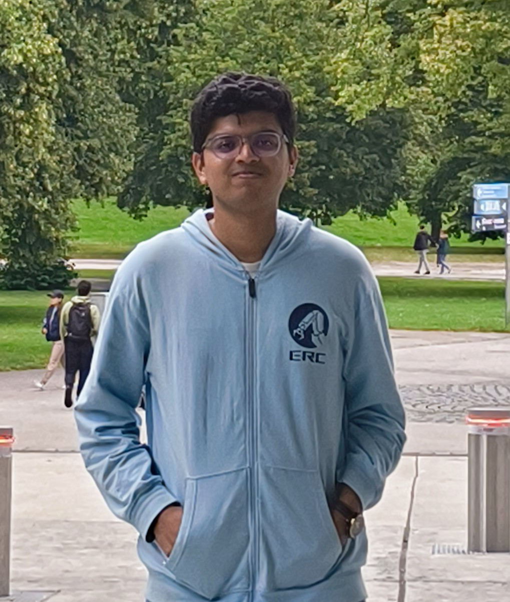

Performance and Research Intern @ e6data
Hello!
I'm a final year undergrad at BITS Pilani, majoring in Computer Science with a minor in Data Science. My research interests mainly revolve around Machine Learning and Computer Systems.
I am currently a student researcher at DaSH Lab, where I am working with Prof. Arnab Paul on designing a cluster-aware file-level adaptive striping framework for parallel file-systems. I have also worked with Prof. Sougata Sen on analyzing data from sensors to gain contextual insights into human activities. The work is currently under review at PerCom 2025!
Previously, I have worked at APPCAIR(BITS Pilani's AI Lab) on using Granger Causality in a non-chaotic pruning strategy that preserves feature importances. I have also interned at NESAC, where I worked on enhancing rainfall forecasting predictions using Genetic Algorithms and Deep Learning.
Recently, I spent an amazing summer at TU Dresden in Germany as a DAAD-Wise Scholar. I worked with Prof. David Kappel and Prof. Anand Subramoney on state-space models for neuromorphic and point-cloud data. This was pretty fun :)
In my free time, I enjoy listening to music, solve logic puzzles or play basketball. I'm a big fan of Radiohead and Bring Me The Horizon (consistently top 5 on my Spotify Wrapped xD). Sometimes I randomly pick up puzzles from Advent of Codeand spend hours on them instead of attending lectures :p And I'm still rooting for Luka, Kyrie and the Mavs to take the NBA title this year.
Publications
STREAM: A Universal State-Space Model for Sparse Geometric Data
Mark Schöne*, *, Karan Bania*, Khaleelulla Khan Nazeer, Christian
Mayr, Anand Subramoney, David Kappel
Arxiv 2024
abstract|
pdf
Does Varying BeeGFS Configuration Affect the I/O Performance of HPC
Workloads?
Arnav Borkar, Joel Tony, Hari Vamsi K. N, Tushar Barman, ,
Sreenath T. M., Arnab K. Paul
2023 IEEE International Conference on Cluster Computing Workshops (CLUSTER)
abstract|
pdf
Gradient-Based Optimisers Versus Genetic Algorithms in Deep Learning Architectures: A
Case Study on Rainfall Estimation Over Complex Terrain
, Nirmal Govindaraj*, Venkatavihan Devaki*, Ritu
Anilkumar
Abstract at: Strategies and Applications of AI and ML in a Spatiotemporal Context, EGU 2024
website
Projects
Grasping Graphormer : Assessing Transformer Performance for Graph
Representation
Blogpost Track, GRAM Workshop @ ICML 2024
We collaborated on a deep-dive blog post examining the core principles behind the Graphormer architecture.
website
[RE] Teaching CLIP to Count to Ten
We attempted reproducing the Google Brain paper "Teaching CLIP to Count to Ten"
github |
report
Project Kratos
Core Member, Autonomous Subsystem
Developing a mars rover as part of an interdisciplinary student-run team. We're responsible for the rover's
autonomous navigation. Worked on a real-time object detector for the rover using YOLOv3 fine-tuned on our
custom dataset. Designed a P-controlled visual servo mechanism to navigate based on arrow directions captured
in a monocular camera feed. Integrated GPS-based navigation with the tech stack to traverse between local GPS
coordinates.
github |
project website
Experience
--Working on optimizations in parallel file systems and storage for
high-performance computing.
--Assisted in managing a 32-node cluster consisting of GPU workstations, rack
servers and Raspberry Pi's
--Involved in the design of a non-chaotic pruning strategy for neural networks
that also preserves feature importances
--Investigated Granger Causality and compared against L0, L1, Rank-based and
LC-Compression methods.
--Modified the discretization of Mamba architecture to adapt to neuromorphic
streams and point-clouds.
--Performed literature review, ran experiments and assisted in the paper
writing.
-- Working on adding AI/ML capabilities to the e6 engine to allow for wider
interoperability.
-- Explored the Apache Ray framework and working with adding Arrow format
support to the engine.
--Analysed the performance difference between CNNS(U-Net) and LSTMs to predict
rainfall on uneven Northeastern terrain.
--Experiemented with Genetic Algorithms to obtain a boost over the traditional
gradient-descent based methods.
Co-Curricular Activities